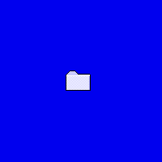

うそ。だまされないでね。

山田次郎太 作
「フォルダ」
１９９７年作成。
パソコンの中にある、フォルダである。この中には何が入るか無限の可能性を秘めている。しかし、空っぽでは、ごみ箱いきである。中味が大切という外見を気にする若者へのメッセージだと、山田氏はいう。現代のパソコンという波をうまくつかんだ、作品であり、Macintoshの人じゃないと、わかんないんじゃないか、そんな疑問ももってしまう快作である。また作品の中にたった一つのフォルダというものが整理の大切さを学ばせる。
＜説明＞
くだらんのう。しかし、このくだらなさの中にも価値があるんじゃ。まあ、これで自分の物にもうそをつき、自分なりの価値をつければうその向上にも役立つじゃろうし、それなりのええ気持ちになれるもんじゃ。わかったかいのう。
お、言い忘れたが、この作品は本当に貴重じゃから、決してさわったり、持ち帰ったりせんようにな。
道場に戻る
目次へ、れっつらごー！